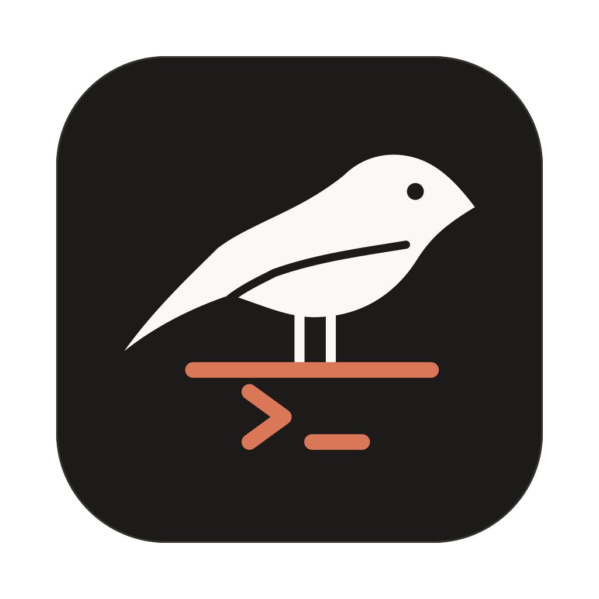
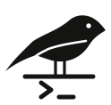
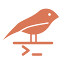

cPerch — brand preview
A perch for your Claude sessions. Rendered from the source SVGs in assets/brand/.
APP ICON — AT SIZE

256
128
64
32
16
MARK — ON LIGHT

ink

orange
MARK — ON DARK
white
orange
LOCKUP
SMALL / FAVICON
glyph 18
favicon 32
favicon 16